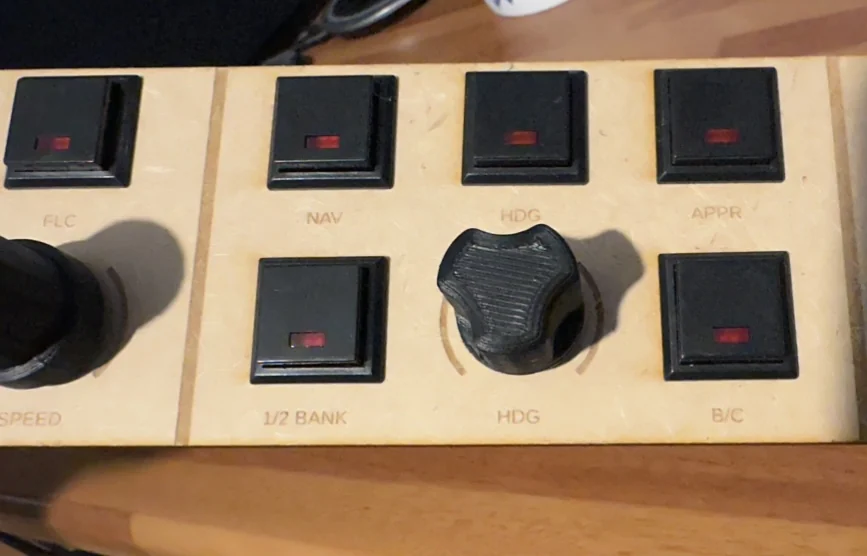
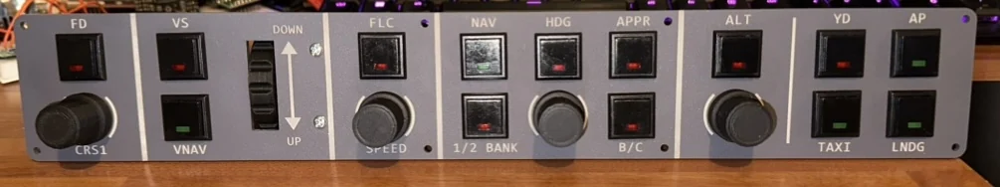
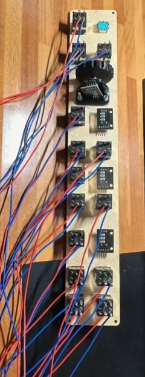
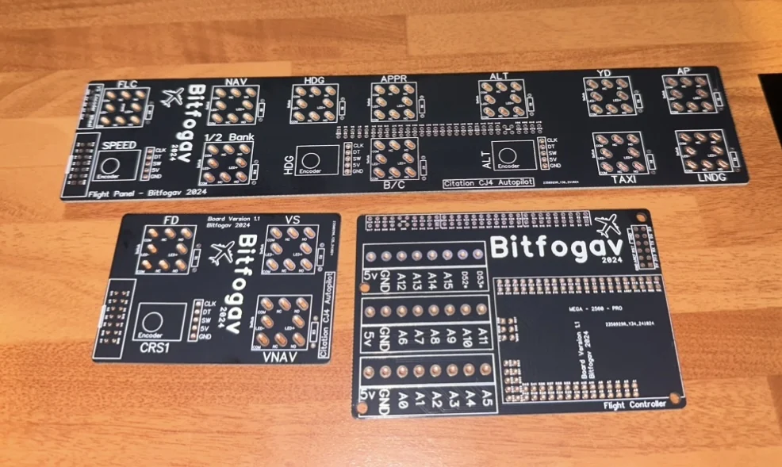
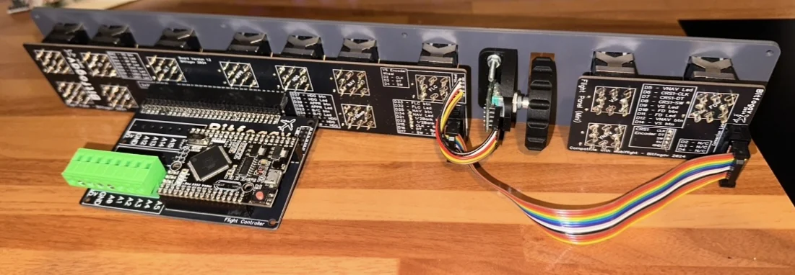

STAGE 01
Prototype controls
The early MDF prototype, with switches and rotary controls fitted.
A custom-built, CJ4-inspired autopilot control panel for Microsoft Flight Simulator 2024. From an early MDF prototype to custom-designed PCBs, 3D-printed controls and a finished grey acrylic front panel, this project brought together electronics, design and flight simulation.

The CJ4 is one of my favourite aircraft in Microsoft Flight Simulator. I wanted a physical autopilot panel that felt more natural than clicking controls on-screen, while also adding a few functions of my own.
When I started, I had no experience with MobiFlight. Over several months I learned how to connect the hardware to the simulator, refine the control layout and bring everything together into a working panel for MSFS 2024.

The early MDF prototype, with switches and rotary controls fitted.

A look behind the early hand-wired prototype.

Three bespoke circuit boards designed for the project in DipTrace.

The rear of the finished panel, showing the controller and interconnected boards.
I designed three PCBs in DipTrace and had them manufactured to suit the layout of the panel.
Custom knobs, a vertical wheel and a 90-degree mount helped reproduce the feel of the aircraft controls.
MobiFlight connects the switches and encoders to Microsoft Flight Simulator 2024 through the project’s microcontroller-based hardware.
The final revision uses a grey acrylic front panel with clearly labelled autopilot functions, switches, rotary controls and a vertical wheel. The electronics sit behind the panel, with the custom PCBs and controller wired together.
What began as an experiment in MobiFlight became a complete working hardware project. The most rewarding part was learning new techniques at every stage — from prototype wiring and PCB layout to 3D printing and the finished assembly.